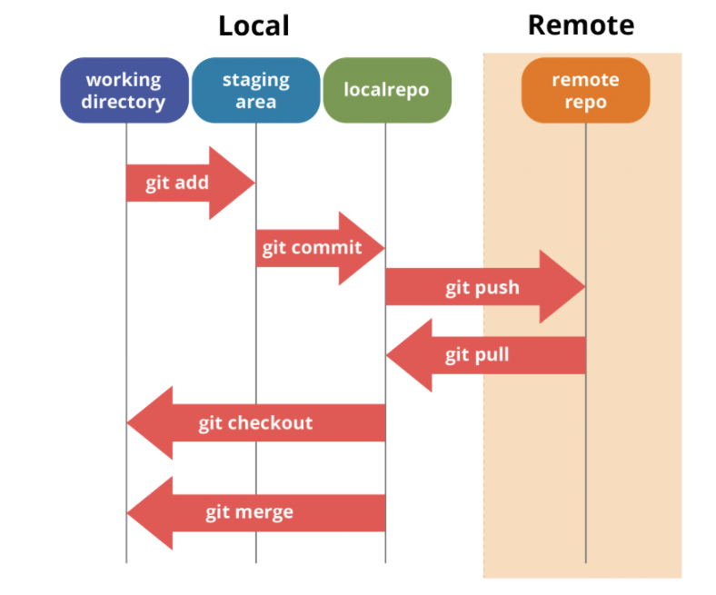
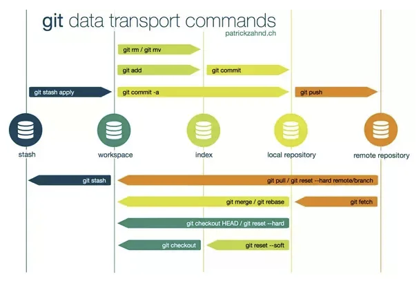

Git Basic Workflow
Using typical git workflow. This doc shows git commands I use every day.
How does git work internally?
- Git works like a file system with version history
- Snapshots are identified by SHA-1 hash sums
- Versions can also have a name (Tag)
add,commit,pushandpullare the most frequent commands used.

|  |
git HEAD
HEAD is a special ref that points to the commit you are currently working on - the currently checked out commit in your git working directory. HEAD usually points to the tip/head of the currently active branch, which is represented in the .git/HEAD file as follows:
$ cat .git/HEAD
ref: refs/heads/main
I can switch branches and git HEAD will be updated.
$ git switch dev
$ cat .git/HEAD
ref: refs/heads/dev
Set up a local repository
In local environment (laptop or cloud directory)
cd YOUR_PROJECT_DIRECTORY
git init
git add --all
git commit -m "initial commit"
- If you want to exclude files in you project directory use a
.gitignorefile - file names will be used recursively (also in all subdirectories), start with
/to select only files in the project root directory - Wildcards can be used to track all files by a pattern. For example to get all python and R files use
*.pyand*.R - select complete directories
YOUR_EXCLUDE_FOLDER/
Clone from a remote repository
git clone CLONEURL
Create new repository
##### Option 1
echo "# Can-I-Shop-2" >> README.md
git init ## Required for new directory
git add .
git commit -m "first commit"
git remote add origin https://github.com/username/projectname.git
git push -u origin master
##### Option 2
git remote add origin https://github.com/bayer-int/elxsj_test.git
git branch -M master
git push -u origin master
Reverse git add git reset <filename>
Add all files in current path git add .
Add all files in project git add -A
Amend commit without changing message git commit --amend --no-edit
Pushing an amended commit. After pushing to remote, amend commit using th e-f option git push -f origin <my_branch>
Putting some changes aside: stash
- You can't pull changes if you have uncommitted work in your project
- How can you get important changes if you are "in the middle of something"?
git stash
git pull
git stash apply
- You can have multiple stashes which you can list with
git stash list
Remove all stash list git stash clear
Using .gitignore
Reset .gitignore part 1
-
Abbreviated steps to reset
.gitignoreto track new changes. -
First, make changes in
.gitignorefile. - Reset cache
git rm -r --cached .
- Add and push changes to github
git add .
git commit -m "Commit message"
Reset .gitignore part 2
-
After creating a
.gitignorefile in your repository and setting patterns to match files which you do not want Git to track, Git starts tracking repository files and respecting the patterns set in the.gitignorefile after you run the git add command (For examplegit add .). -
The problem is that if we later make some changes to the .gitignore file and then just run the git add command again, the changes made in the .gitignore file will not take effect.
Reset .gitignore part 3
-
For example if you later set in the .gitignore file that you want Git to start tracking a file which you previously set to be ignored, the file will still be untracked if you just run the
git add .command. -
This is because, the git cache needs to be cleared. I usually just do this with the
git rm -r --cached .then after I run thegit add .command to apply the.gitignorechanges.
Fetch
Fetch all of the remote branches and tags from the existing repository to our local index:
git fetch origin
branches local
But even if all branches and tags have been fetched and exist in a local index, we still won’t have a copy of them that is physically local. And a local copy is required to migrate the repository.
We can check for any missing branches that we need to create a local copy of. Let’s list all existing branches (local and remote) to see whether we are missing any copies locally:
git branch -a
We can easily tell from this output whether we have local copies of all remote branches. The remote ones are prefixed with the remotes/origin/ path, and the local ones are not. So, only our master branch is local, whereas remotes/origin/develop and remotes/origin/release/0.1 are not. That’s OK — let’s just create local copies:
git checkout -b develop origin/develop
git checkout -b release/0.1 origin/release/0.1
After creating local copies of everything, we can verify once again whether all branches with the remotes/origin/ prefix have corresponding local copies (shown without the prefix):
git branch -a
develop
master
* release/0.1
remotes/origin/develop
remotes/origin/master
remotes/origin/release/0.1
Now we know for sure that all branches in our repository are stored locally, and we are ready to move the repository to a new host.
Switch to another branch
git switch <branch name>
Create new branch
This is a two step process.
git checkout -b <branch-name>Create new branch locallygit push -u origin <branch-name>Push new branch local to remote
After git push to remote, the repo on GitHub.com will show the new branch. Verify the new branch and proceed to add new code using git add > git commit and git push.
Merge dev branch into master
## on branch "dev"
git commit -m " my message "
git push
git checkout master # now on branch master
git branch -a
git pull ## ensure local master is current with remote
git merge dev
git push
git checkout dev # switch to dev branch
RM branches
- delete local branch
git branch -d <branch>
- delete remote branch
git push <remote_name> -d <remote_branch_name>
### Usually looks like this
git push origin -d dev
Change remote origin
Migrate a Git repository OR to merge existing ones. This is useful if the remote needs to be mapped to local files.
Change the Git origin remote to a new URL.
## Update the URL of origin remote using SSH
git remote set-url origin git@github.com:username/repo.git
## My example
git remote set-url origin git@github.com:bayer-int/smol-cls-mlops-scaffold.git
# Test URL remote
git remote show origin
Pull Request
The following code creates a new branch, makes an arbitrary change, and pushes it to new_branch:
Open the git repo ( from github.com ) and click on the Fork button in the top-right corner. This creates a new copy of the repo we want to update, under your GitHub user account with a URL like: https://github.com/<UserName>/reponame
- clone the repo
git clone <repo_2> - Create a new branch
git checkout -b new_branch - Create a new remote for the upstream repo (github server)
git remote add upstream <repo_1>
Then git add, git commit and git push as usual.
The entire CLI workflow follows this pattern:
git clone https://github.platforms.engineering/ELXSJ/MWAA.git
git checkout -b dev
git remote add upstream https://github.platforms.engineering/science-at-scale/MWAA.git
git add .
git commit -m "add ingress to ALB"
git branch -a
git push -u origin dev
Once you push the changes to your repo, the Compare & pull request button will appear in GitHub.
Update local repo to latest remote tag
Clone repo. This step was assumed to be done previously but placed here to make the example consistent.
git clone https://github.com/mlrun/demos.git
:exclamation: Use latest branch and tag from github repo
Update current project
## To check out the latest Git tag, first, update
## the repository by fetching the remote tags available.
git fetch --tags
## Then, retrieve the latest tag available by using the “git describe” command.
latestTag=$(git describe --tags `git rev-list --tags --max-count=1`)
echo $latestTag
## Finally, use the “git checkout” command to checkout the latest git tag
git checkout $latestTag -b latest
## Execute the “git log” command to make sure that we are actually
## developing starting from the new tag.
git log --oneline --graph
* 8c98f7c (HEAD -> latest, tag: v1.1.x-rc5, origin/1.1.x) Merge pull request #295 from mlrun/1.1.x-dev
|\
| * ba1c1cb (origin/1.1.x-dev) Merge pull request #294 from aviaIguazio/1.1.x-dev
| |\
| | * e885976 add timeout for pipeline deploy
!!!
Find file I have edited.
git log --pretty --author=$( git config user.email ) --name-only | sort | uniq
github Stats
Gather insights into the usage of different programming languages and their dependencies within our organization.
Useful Links
- UI URL: https://devtools-np.monsanto.net/github-stats
- UI Repo: https://github.platforms.engineering/APALA4/github-stats-ui
- API Docs: https://devtools-np.monsanto.net/github-stats-api/v1/docs
- API Repo: https://github.platforms.engineering/APALA4/github-stats-api
- Vulnerabilities API: https://ossindex.sonatype.org/rest
Github Hooks
Many people are familair with github actions and its common to use github actions to perform code formatting or testing. Another way to do this is using git hooks.
Authors
fuad.abdallah@bayer.com
michael.madsen@bayer.com
References
Some advanced topics not covered but important to know.
- Submodules
- github api
You can find more information in the Pro Git book
-
Pro Git by Scott Chacon and Ben Straub is available to read online for free. A hard copy can be purchased online.